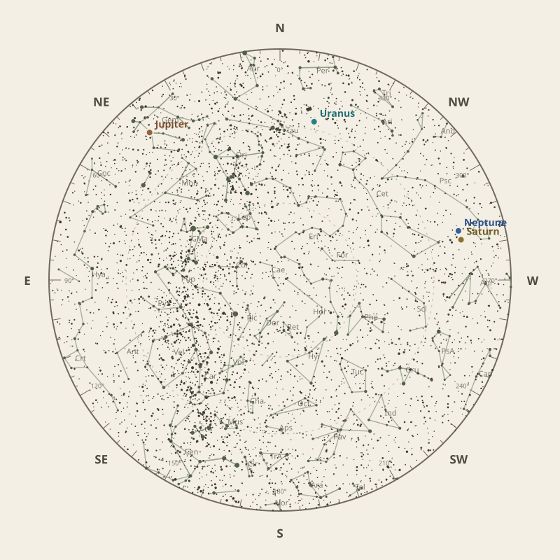

← Annual almanac


North is at the top; east is at the left. Planets shown are above the horizon at chart time.
Monthly field almanac
January 2026
Jupiter reaches opposition on 11 Jan 2026 and is highest around 1:30 am.
- New Moon
- 19 Jan Darkest skies
- Full Moon
- 4 Jan Brightest skies
- Best dark window
- 23 Jan 8h 06m
Current conditions
Checking the sky near Southern Tasmania, Australia…
Mid-month sky at 10 pm
Face the matching compass direction and read outward from the centre toward the horizon.

Night planner
Choose a date to see astronomical darkness, Moon interference, Galactic Centre visibility, and planet altitudes and times.
Best low-Moon dark periods this month
- 9:20 pm–5:26 am8h 06m · 20% Moon
- 9:21 pm–5:25 am8h 04m · 12% Moon
- 9:22 pm–5:23 am8h 02m · 7% Moon
January highlights
- Milky Way
Milky Way core window
1h 12m with 32° altitude.
- Planets
Jupiter
Best monthly date at 25° altitude.
- Planetary events
Jupiter opposition
Visible for most of the night.
- Minor planets
1 Ceres
27° altitude; magnitude 8.9.
- Occultations
HIP 22400 lunar occultation
11:19 pm; Moon at 19° altitude for the first listed contact.


Moon phases
91%
80%
20%
12%
80%
Low illumination favours faint targets. Bright lunar targets are best near full Moon.
Download Moon phase CSV →

Galactic Centre sessions
- 4:25 am–5:36 am1h 12m · core to 32°
- 4:35 am–5:35 am1h 00m · core to 32°
- 4:38 am–5:33 am56m · core to 30°


Planet visibility
Evening
- Neptune1 Jan · 9:30 pm32° · Good
- Saturn1 Jan · 9:30 pm32° · Good
- Uranus12 Jan · 9:30 pm28° · Good
Overnight
- Jupiter1 Jan · 2:00 am25° · Good
Predawn
- Mercury1 Jan · 5:00 am2° · Poor
Events
- Jupiter oppositionVisible for most of the night.
- 1 Ceres27° altitude; magnitude 8.9.
- HIP 22400 lunar occultation11:19 pm; Moon at 19° altitude for the first listed contact.


Data and downloads
Positions are unavailable for 2 comet entries.
Occultation times use a smooth lunar limb; confirm grazing events with IOTA Occult 4.